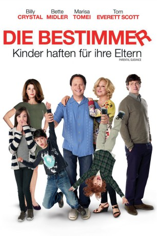
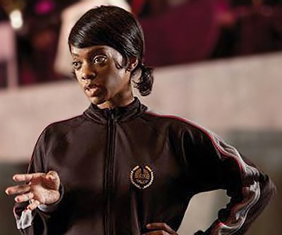

#6055 Die Bestimmer - Kinder haften für ihre Eltern
Alternativ: Parental Guidance
 
 IMDB-Wertung: 6.1 / 10
IMDB-Wertung: 6.1 / 10  Metascore: 0
Metascore: 0 
Alice bricht zu einer einwöchigen Geschäftsreise auf. Ihre drei Kinder Harper, Turner und Barker sollen in der Zwischenzeit von Großvater Artie und Großmutter Diane betreut werden. Alice besteht darauf, dass Artie die Rolle des Aufpassers so spielt, wie sie es möchte: Er soll nur moderne Erziehungsmethoden aus dem 21. Jahrhundert anwenden. Doch als die kleinen Kinder ihm auf der Nase herumzutanzen drohen und er Angst bekommt, die Kontrolle über sie zu verlieren, greift der Senior auf seine altbewährten Methoden zurück. Mit diesen verpasst er den Kindern einen ordentlichen Schock. Seine "Old-School-Erziehungsmethoden" hatten sie nicht erwartet und somit beginnt ein Generationenkampf. Jung gegen Alt – wer wird am Ende den Sieg davontragen?
Jahr: 2012
Dauer: 104 Minuten
FSK: 0
Land: USA Studio: 20th Century FoxTonspuren: DTS - ,
Untertitel:
Auflösung: 1080p (1920x1040) Größe: 11980 MB
Genre: Komödie, Familie
Regisseur: Andy Fickman
Drehbuch: Aleksey Dudarev
Soundtrack:
Darsteller:
 Billy Crystal als Artie Decker
Billy Crystal als Artie Decker Bette Midler als Diane Decker
Bette Midler als Diane Decker Marisa Tomei als Alice Simmons
Marisa Tomei als Alice Simmons Tom Everett Scott als Phil Simmons
Tom Everett Scott als Phil Simmons Bailee Madison als Harper Simmons
Bailee Madison als Harper Simmons Joshua Rush als Turner Simmons
Joshua Rush als Turner Simmons- Kyle Breitkopf als Barker Simmons
- Jennifer Crystal Foley als Cassandra
 Rhoda Griffis als Dr. Schveer
Rhoda Griffis als Dr. Schveer Gedde Watanabe als Mr. Cheng
Gedde Watanabe als Mr. Cheng Tony Hawk als Tony Hawk
Tony Hawk als Tony Hawk- Cade Jones als Ivan Halloran
- Mavrick Moreno als Cody
- Madison Lintz als Ashley
- Corey James Wright als Drayton Glass
- Justin R. Kennedy als Brad Zolick
- Brad James als Officer Chernin
 Christine Lakin als Helen
Christine Lakin als Helen Ron Clinton Smith als Umpire Clark
Ron Clinton Smith als Umpire Clark- Hunter Weeks als Dino
- Joe Knezevich als Kent
- Brooke Jaye Taylor als Lois
- Maia Moss-Fife als Samantha
- Dwayne Boyd als Lowell
 Tiffany Morgan als Amanda
Tiffany Morgan als Amanda- Kathleen Hogan als Betsy
- Patricia French als Rose
- Matthew Warzel als Josh
- Peter Luis Zimmerman als Nate
 Marla Malcolm als Emma
Marla Malcolm als Emma-  Karan Kendrick als Lisa
- Bernie Ask als Homeless Guy , uncredited
- Hannah Marie Bailey als Harper's Classmate , uncredited
- Melissa Bender als Restaurant Girl , uncredited
- Peter den Boer als Baseball Fan , uncredited
 Miller Carbon als Business Commuter in Men's Restroom , uncredited
Miller Carbon als Business Commuter in Men's Restroom , uncredited- Blake Cooper als Speech Student , uncredited
- Brett Cooper als Speech Student , uncredited
- Will Ford als Resturaunt Patron , uncredited
- Gregory French als Commuter , uncredited
- Katy Harper als Orchestra performer , uncredited
- Bradford Haynes als Skycap , uncredited
- Lauren Henneberg als Upscale Guest , uncredited
- Dale Anthony Jennings als Usher , uncredited
- Anisa Nyell Johnson als Conservatory Parent / Little League Parents , uncredited
- King als Theater Patron , uncredited
- Kyla-Drew als Speech Student , uncredited
- Frederick Nah IV als College Student , uncredited
- Paul Nygro als , uncredited
- Sharon Oliphant als Pre-school Teacher , uncredited
Datei: X:\2012(A-F)\Bestimmer - Kinder haften für ihre Eltern, Die (2012, FSK0, 1920x1040).mkv seit 25.04.2017
Festplatte: HD 2012(A-M)
 Es gibt insgesamt 102 Filme in der Gruppe '2012(A-F)'
Es gibt insgesamt 102 Filme in der Gruppe '2012(A-F)'